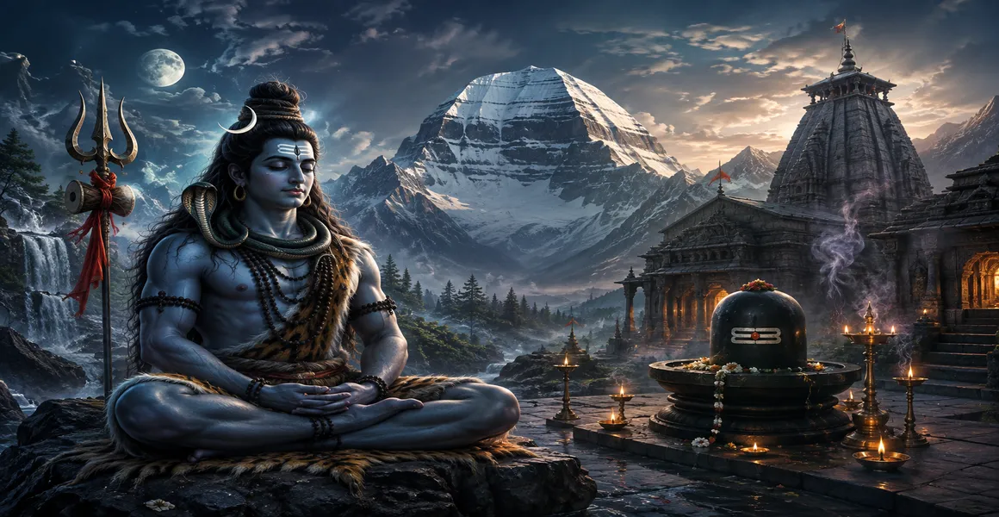

Explore Lord Shiva
শিবকে অন্বেষণ করুন
Lord Shiva is not encountered through only one story, one scripture or one form. He is remembered as Mahadeva, the Great Lord, as the compassionate refuge of devotees, as the great yogi, as Nataraja, as Shankara, as Rudra and through countless sacred names and manifestations.
The Explore Shiva section of Bholenath Dham is a gateway into these many dimensions of Shaiva devotion. Here the seeker can move from knowing Shiva's names and forms to exploring His sacred stories, worship, mantras, pilgrimage, Shiva-Shakti traditions and divine symbols.
Six Sacred Paths of Exploration
Each path opens a different doorway into the world of Mahadeva. Explore them slowly, return often, and let knowledge become remembrance and remembrance become bhakti.
🔱 Know Mahadeva
🔱 মহাদেবকে জানুন
Begin with the names, forms and spiritual dimensions through which devotees contemplate Lord Shiva.
Forms of Lord Shiva
ভগবান শিবের বিভিন্ন রূপ
Explore the many divine manifestations and sacred forms through which Shiva is remembered.
Names of Lord Shiva
ভগবান শিবের পবিত্র নাম
Discover the devotional meanings carried by the sacred names of Mahadeva.
Lord Shiva as Mahayogi
মহাযোগী ভগবান শিব
Contemplate Shiva as the supreme yogi, ascetic and master of inner stillness.
📖 Stories & Sacred Narratives
📖 কাহিনি ও পবিত্র আখ্যান
Enter the sacred narratives of Shiva, His devotees and the divine events preserved in Hindu sacred traditions.
Stories of Lord Shiva
ভগবান শিবের কাহিনি
Journey through memorable stories of Mahadeva and the devotees who sought His grace.
Lord Shiva and the Great Battles
ভগবান শিব ও মহাযুদ্ধের কাহিনি
Explore sacred narratives of divine conflict, protection, transformation and the triumph of dharma.
Lord Shiva and His Devotees
ভগবান শিব ও তাঁর ভক্তগণ
Discover stories that reveal the intimate relationship between Mahadeva and sincere devotees.
🕉️ Worship, Mantra & Sadhana
🕉️ পূজা, মন্ত্র ও সাধনা
Explore devotional practices through which devotees remember, worship and meditate upon Shiva.
Lord Shiva Mantras
ভগবান শিব মন্ত্র
Explore sacred Shiva mantras and the devotional practice of repeating the divine name.
Lord Shiva Puja
ভগবান শিব পূজা
Learn about the devotional spirit of worship offered to Mahadeva.
Lord Shiva Abhishekam
ভগবান শিব অভিষেক
Explore the devotional significance of sacred offerings made during Shiva Abhishekam.
Lord Shiva Sadhana
ভগবান শিব সাধনা
Explore remembrance, prayer, discipline and devotional approaches to Shiva.
Lord Shiva Meditation
ভগবান শিব ধ্যান
Explore the contemplative tradition of meditating upon Shiva and His sacred presence.
Lord Shiva Dhyanam
শিব ধ্যানম্
Enter the sacred world of dhyana, inner stillness and remembrance of Mahadeva.
🛕 Sacred Places & Pilgrimage
🛕 পবিত্র স্থান ও তীর্থযাত্রা
Walk through the sacred geography of Shiva, from Jyotirlingas to ancient temples and pilgrimage traditions.
Twelve Jyotirlingas
দ্বাদশ জ্যোতির্লিঙ্গ
Journey through the sacred tradition of the twelve Jyotirlingas of Shiva.
Famous Lord Shiva Temples
বিখ্যাত শিব মন্দির
Discover important temples where generations of devotees have worshipped Mahadeva.
Sacred Places of Lord Shiva
শিবের পবিত্র স্থান
Explore mountains, rivers, forests and sacred regions associated with Shiva.
🌺 Shiva, Shakti & Divine Family
🌺 শিব, শক্তি ও দিব্য পরিবার
Explore the sacred relationships of Shiva with Shakti, Parvati and the divine family.
Shiva and Shakti
শিব ও শক্তি
Explore the sacred relationship between Shiva and Shakti, consciousness and divine power.
Shiva and Parvati
শিব ও পার্বতী
Explore the sacred stories and spiritual themes surrounding Shiva and Goddess Parvati.
Shiva and the Divine Family
শিব ও দিব্য পরিবার
Discover the sacred family of Shiva, including Parvati, Ganesha and Karttikeya.
🐍 Symbols & Sacred Iconography
🐍 প্রতীক ও পবিত্র মূর্তিতত্ত্ব
Shiva's sacred imagery carries layers of meaning. Explore the symbols through which devotees contemplate Mahadeva.
Shiva Linga
শিবলিঙ্গ
Explore the sacred place of the Shiva Linga in worship, contemplation and temple tradition.
Nandi
নন্দী
Learn about Nandi, the sacred companion, guardian and devoted servant of Shiva.
Trishula
ত্রিশূল
Explore the sacred imagery and devotional meaning associated with Shiva's trident.
Damaru
ডমরু
Discover the sacred symbolism of Shiva's damaru and its association with cosmic sound.
Nataraja
নটরাজ
Explore Shiva as Nataraja, Lord of the cosmic dance, movement and transformation.
Ganga on Shiva
শিবের জটায় গঙ্গা
Discover the sacred story and symbolism of Goddess Ganga flowing through Shiva's matted locks.
A Journey from Knowledge to Devotion
জ্ঞান থেকে ভক্তির পথে এক যাত্রা
The purpose of exploring Shiva is not simply to collect information. The sacred traditions surrounding Mahadeva invite the seeker to move inward. A story may awaken faith. A name may become a mantra. A symbol may become an object of contemplation. A pilgrimage may become an act of surrender. A simple offering may become an expression of gratitude.
This section is designed to grow into a living devotional library. Each topic has its own dedicated page, allowing us to develop the subject deeply with sacred narratives, explanations, references, imagery, prayers and related reading.
Shiva and Shakti
The sacred traditions surrounding Shiva repeatedly bring Shiva and Shakti into contemplation together. Shiva is contemplated as the still and transcendent principle, while Shakti represents divine power, movement and manifestation. Their relationship is expressed through countless stories, forms and devotional traditions.
The stories of Shiva and Parvati also offer a rich devotional world of tapas, love, responsibility, companionship, family and spiritual aspiration.
Let Shiva Become a Daily Remembrance
শিবস্মরণ হোক দৈনন্দিন সাধনা
Begin with one name, one story, one mantra or one quiet moment of remembrance. The path of devotion does not require the heart to know everything at once. What matters is sincere remembrance of Mahadeva.
May the remembrance of Mahadeva bring stillness to the mind, devotion to the heart, truth to speech and compassion to action.
Frequently Asked Questions
What is Explore Shiva?
Explore Shiva is a dedicated devotional section of Bholenath Dham that brings together different ways of learning about and remembering Lord Shiva.
How many topics are included here?
The Explore Shiva landing page introduces twenty-four dedicated devotional topics divided into six major categories. Each topic has its own planned page.
Where should a beginner start?
A beginner may start with Shiva's names, forms and stories, then gradually explore worship, mantras, sacred places, Shiva-Shakti traditions and sacred iconography.
Will more pages be added?
The twenty-four pages form the foundation of the Explore Shiva library. The section can grow further as new devotional subjects are developed.
Continue Your Sacred Journey
Continue exploring the sacred world of Bholenath Dham, enter the Shiva Purana library, or return to the main home of the Dham.